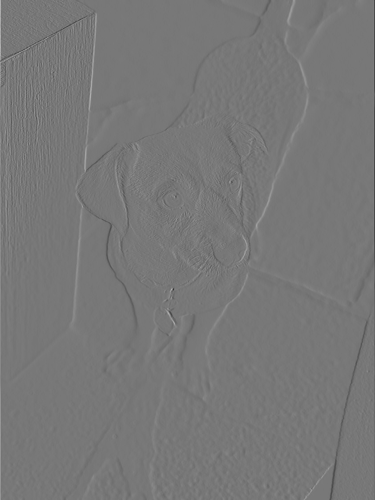

Introduction
________________________________
Part 1.1: Convolutions from Scratch
# 4 for-loops
def convolve_naive(image, kernel):
im_height, im_width = image.shape
k_height, k_width = kernel.shape
pad_height = k_height // 2
pad_width = k_width // 2
padded = np.pad(image, ((pad_height, pad_height), (pad_width, pad_width)), mode = 'constant', constant_values = 0)
output = np.zeros_like(image)
for i in range(im_height):
for j in range(im_width):
result = 0
for x in range(k_height):
for y in range(k_width):
result += padded[i + x][j + y] * kernel[x][y]
output[i][j] = result
return output
# 2 for-loops (vectorized)
def convolve_vectorized(image, kernel):
im_height, im_width = image.shape
k_height, k_width = kernel.shape
pad_height = k_height // 2
pad_width = k_width // 2
padded = np.pad(image, ((pad_height, pad_height), (pad_width, pad_width)), mode = 'constant', constant_values = 0)
output = np.zeros_like(image)
for i in range(im_height):
for j in range(im_width):
region = padded[i:i + k_height, j:j + k_width]
output[i, j] = np.sum(region * kernel)
return output
Analysis: overall, convolve2d was much faster than the naive implementations above. Convolving a box filter with an image of my friend's dog took well over a minute with the 4 for-loop implementation (~1 min 15 sec), 10 seconds with the vectorized convolution, and was nearly instantaneous with convolve2d (< 1 sec). By inspection, the results also looked identical as the boundaries and edges were pretty much the same.
Original Ozzie
Boxed Ozzie

Dx-ed Ozzie

Dy-ed Ozzie
Part 1.2: Finite Difference Operator
________________________________

cameraman-reg.jpg
Without Gaussian Filter
Without Gaussian Filter
cameraman-reg.jpg
With Gaussian Filter
With Gaussian Filter
Part 1.3
________________________________
Part 2.1
________________________________
Part 2.2
________________________________
Part 2.3
________________________________
Part 2.4
________________________________